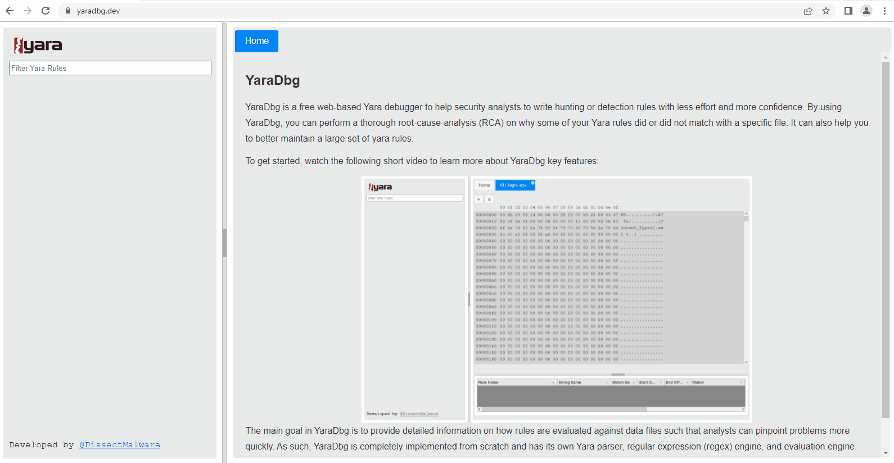

YaraDbg
YaraDbg is a free web-based Yara debugger to help security analysts to write hunting or detection rules with less effort and more confidence. By using YaraDbg, you can perform a thorough root-cause-analysis (RCA) on why some of your Yara rules did or did not match with a specific file. It can also help you to better maintain a large set of yara rules.
To get started, watch the following short video to learn more about YaraDbg key features:
The main goal in YaraDbg is to provide detailed information on how rules are evaluated against data files such that analysts can pinpoint problems more quickly. As such, YaraDbg is completely implemented from scratch and has its own Yara parser, regular expression (regex) engine, and evaluation engine.
All data files remain on your machine, only yara rules are sent to YaraDbg backend for parsing purposes.